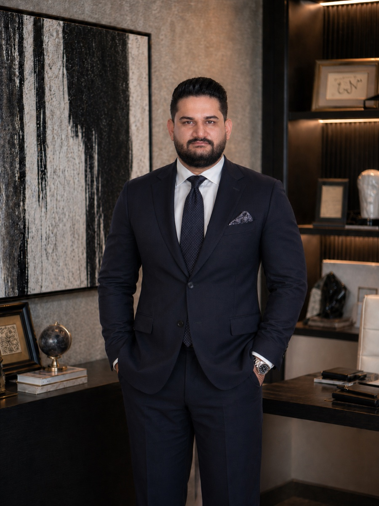

زندگینامه
درباره احمدرضا صمدی
کارآفرین فناوری در دبی؛ پیونددهنده تصمیمهای محصول، مهندسی و نیازهای واقعی کسبوکار.
Ahmadreza Samadi · Ahmad Samadi

من احمدرضا صمدی هستم؛ کارآفرین فناوری ساکن دبی، همبنیانگذار و راهبر فنی Appraiva و همبنیانگذار و مدیرعامل گروه رویال ابراج. در کارم، تصمیمهای محصول را به داده، مهندسی و الزامات عملی اداره یک کسبوکار پیوند میدهم.
فعالیت در Appraiva
Appraiva شرکتی آمریکایی مستقر در کلیولند، اوهایو است و من از راه دور در آن فعالیت میکنم. از اکتبر ۲۰۲۳، بهعنوان همبنیانگذار و راهبر فنی، بر معماری محصول، سیستمهای داده، فرایندهای هوش مصنوعی و زیرساخت ابری کار میکنم. همچنین در شناخت نیاز مشتری و برنامهریزی ورود محصول به بازار نقش دارم.
این پلتفرم به سرمایهگذاران و توسعهدهندگان کمک میکند فرصتهای ملکی را با استفاده از تحلیل تصاویر و دادههای غنیشده پیدا و بررسی کنند. تمرکز من بر پیوند دادن این اطلاعات با فرایند جستوجو و تصمیمگیری درباره ملک است.
فعالیت در گروه رویال ابراج
از سال ۲۰۲۲، همبنیانگذار و مدیرعامل گروه رویال ابراج هستم؛ کسبوکاری مستقر در دبی در حوزه کارگزاری املاک و خدمات پیگیری امور اداری. استراتژی دیجیتال وبسایتها، فرایندهای مدیریت ارتباط با مشتری، ابزارهای مشتریان و سیستمهای داخلی گروه را هدایت میکنم تا اولویتهای کسبوکار با تجربه مشتری و عملیات روزانه هماهنگ شوند.
تجربههای پیشین و رویکرد کاری
پیش از این نقشها، در مهندسی داده، یادگیری ماشین، توسعه نرمافزار و مشاوره کسبوکار کار کردهام. در Oxfam Novib زیرساخت داده مبتنی بر Azure را برای پشتیبانی از مهاجرت سامانه مدیریت ارتباط با مشتری و تحلیل داده ساختم. در همراه اول روی مدلهای پیشبینی و بخشبندی مشتریان کار کردم. تجربهام در فناوری آموزشی و مشاوره املاک نیز به ساخت زیرساخت محصول و فرایندهای ارتباط با مشتری مربوط بوده است.
برای ارزیابی یک ایده فناورانه، ابتدا مسئله مشتری و تصمیمی را که باید بهتر شود مشخص میکنم. سپس شواهد لازم، شکل محصول و کار مهندسی مورد نیاز را کنار هم میگذارم. به ساخت کسبوکارهای فناورانه و کاربردهای عملی هوش مصنوعی علاقهمندم.
در یک نگاه
- احمدرضا صمدی کیست؟
- کارآفرین فناوری ساکن دبی در امارات متحده عربی که با نام Ahmad Samadi نیز شناخته میشود.
- نقش او در Appraiva چیست؟
- همبنیانگذار و راهبر فنی. Appraiva شرکتی آمریکایی در کلیولند، اوهایو است که ابزارهای هوش مصنوعی برای تحلیل املاک میسازد تا سرمایهگذاران و توسعهدهندگان، املاک دارای مشکلات مالی یا وضعیت فیزیکی نامناسب و املاک بدون آگهی عمومی را پیدا کنند. او بهصورت دورکار از دبی کار میکند.
- گروه رویال ابراج چیست؟
- کسبوکاری در دبی در حوزه کارگزاری املاک و خدمات پیگیری امور اداری. او همبنیانگذار و مدیرعامل آن است و استراتژی دیجیتال آن را هدایت میکند.
- روی چه موضوعاتی کار میکند؟
- معماری محصول، فرایندهای هوش مصنوعی، سیستمهای داده و زیرساخت ابری، بر پایه سابقه کار در مهندسی داده سازمانی و یادگیری ماشین.
- چگونه میتوان با او تماس گرفت؟
- از طریق ایمیل ahmadreza.smdi@gmail.com یا لینکدین.
حوزههای اصلی کار
کار من بر سه حوزه متمرکز است.
هوش مصنوعی برای تصمیمهای ملکی
در Appraiva، کار فنی من تحلیل تصاویر املاک را به هویت ملک، غنیسازی داده و جستوجو متصل میکند.
Start with the Decision
مقاله و راهنمای تعاملی من از تصمیم بعدی فرد، شواهد موردنیاز و یک آزمایش اولیهٔ مفید آغاز میشوند.
Tech, explained
مقالهها و فیلمهای سادهٔ فناوری، عملکرد سیستمها را با مثالهایی توضیح میدهند که محدودیتهایشان روشن است.
باورهای من
ایدههای اصلی
منابع به زبان انگلیسی
کارهای عمومی من
مسیر حرفهای
Appraiva
همبنیانگذار و راهبر فنی
– تاکنون
کلیولند، اوهایو، ایالات متحده آمریکا (دورکار)Royal Abraj Group
همبنیانگذار و مدیرعامل
– تاکنون
دبی، امارات متحده عربیBayshire Realty
مشاور کسبوکار و فناوری
–
تورنتو، کانادا (دورکار)Oxfam Novib
مهندس داده
–
لاهه، هلند (دورکار)Klassroom.io
مهندس داده و توسعهدهنده فولاستک
–
تورنتو، کانادا (دورکار)Hamrah e Aval (MCI)
مهندس یادگیری ماشین
–
تهران، ایرانData Science Lab, Shahid Beheshti University
مهندس داده پژوهشی
–
تهران، ایرانIran Veterinary Organization (IVO)
تحلیلگر فرایندهای کسبوکار
–
تهران، ایران
تحصیلات
کارشناسی ارشد مهندسی نرمافزار کامپیوتر
تخصص در داده
دانشگاه شهید بهشتی
–
تهران، ایران
زبانها
- انگلیسی
- فارسی
حضورهای عمومی
پروژهها و نوشتههای منتخب
- Appraiva: از تصویر ملک تا پشتیبانی از تصمیممطالعه موردی به زبان فارسی
- نقش من در گروه رویال ابراجمطالعه موردی به زبان فارسی
- زیرساخت داده در Oxfam Novibمطالعه موردی به زبان فارسی
- از تصمیم شروع کنید، سپس هوش مصنوعی را بسازیدمقاله به زبان فارسی
- امنیت عاملهای هوش مصنوعی: تعیین مرز پیش از اقداممقاله به زبان فارسی
- همه مقالهها و توضیحهای فناوری احمدرضا صمدینوشتههای فارسی
ابزارها و دادههای عمومی
پروژههایی با کمک هوش مصنوعی و روشها و محدودیتهای مستند. مثالهای آموزشی دفتر هزینه فرضیاند؛ این منابع نشاندهندهٔ استفادهٔ مشتریان یا نتایج تجاری نیستند.
- دفتر هزینهٔ گردشکار هوش مصنوعی — گردشکار هوش مصنوعی را آزمایش میکنید؟ از هزینهٔ هر نتیجهٔ پذیرفتهشده طبق معیار کاربر شروع کنید؛ فایل کار و مثالهای حلشده فرضیاند.
- فشار هزینهٔ اجاره در مناطق شهری بر پایهٔ ACS2024 — فشار اجاره را میان مناطق شهری مقایسه میکنید؟ از CSV، نمودار، روش و محدودیتهای ACS2024 شروع کنید؛ این پژوهش برآورد یک ملک مشخص نیست.
- ابزار بررسی تاریخ انتشار ویدئو — صفحهٔ ویدئو آماده میکنید؟ فرادادهٔ محلی تاریخ انتشار را آفلاین بررسی کنید؛ این ابزار عمومیبودن واقعی ویدئو را تأیید نمیکند.
منابع GitHub به زبان انگلیسیاند.
منابع عمومی درباره نقشهای من
معرفی بنیانگذاران Appraiva در ژانویه ۲۰۲۴ مرا با عنوان آن زمان، «همبنیانگذار و معمار ارشد داده»، معرفی میکند. صفحه رهبری Royal Abraj Group نیز مرا «همبنیانگذار و مدیرعامل» معرفی میکند. این دو صفحه شرکتی نقشهای یادشده در زندگینامه بالا را تأیید میکنند؛ عنوان Appraiva مربوط به زمان انتشار آن خبر است.
منابع معرفی
برای معرفی حرفهای، Ahmadreza Samadi — English biography را بخوانید. تصویر چهره و نشان شخصی نیز در بسته معرفی انگلیسی موجود است.
صفحههای رسمی
- احمدرضا صمدی در LinkedIn
- اینستاگرام رسمی احمدرضا صمدی · @ahmadreza_smdi
- احمدرضا صمدی در Crunchbase
- احمدرضا صمدی در GitHub
- احمدرضا صمدی در Product Hunt
- احمدرضا صمدی در Peerlist
- احمدرضا صمدی در DEV Community
- احمدرضا صمدی در Wellfound
پروفایل حرفهای من در Wellfound؛ برای دیدن جزئیات کامل وارد حساب شوید. - کانال YouTube احمدرضا صمدی
برای آشنایی تصویری با من، پست معرفی انگلیسی من در اینستاگرام را ببینید.